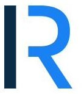
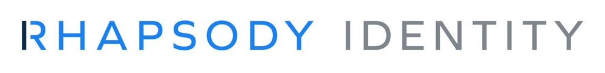
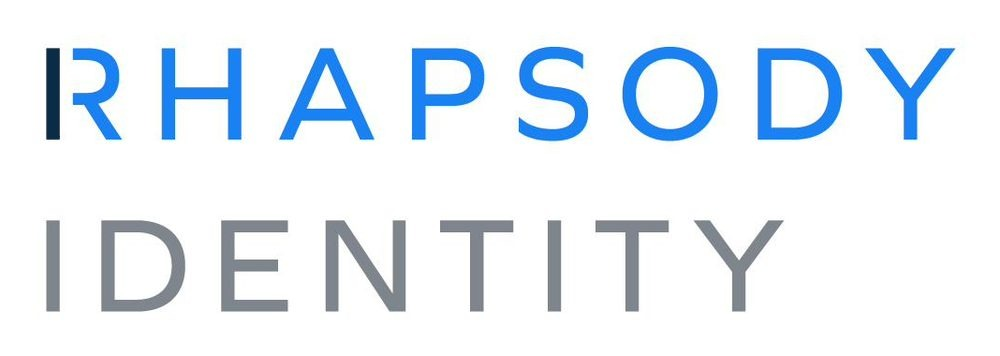

The Rhapsody wordmark is the core of the identity. Lead with the primary version wherever possible; the alternates exist for dark backgrounds, one-color use, and tight spaces.
Four versions across light and dark backgrounds: the full-color wordmark and a one-color version of each. Lead with the primary (navy bar, blue wordmark on light) wherever possible.

The R monogram, for tight spaces only, social avatars, favicons, merch. Light version on light backgrounds; for dark mode the blue R keeps its color with a white bar (matching the wordmark’s blue letters and white accent). Never in place of the full logo in formal communications.
Product logos pair the Rhapsody wordmark with a product name in a fixed lockup, horizontal or vertical. Use only approved lockups, never create product-only wordmarks or alter the mark.


Keep clear space of at least the height of the “R” on all sides. Mono, dark, and blue variants and all product names live in the product logo library.
For pairing the Rhapsody logo with a partner or customer logo, see Partner logos, which covers the co-branding lockup alongside the bracket treatment for logo walls and the rules for using another company’s logo.
Use only the official logo files. Each example below is improper use, the red slash marks what to avoid.
Unapproved colors
Disproportionate resize
Modified mark (letters removed or redrawn)
Tilted or angled
Outlined
Content over the logo
Drop shadow or effects
Low-contrast background
Download official logo files: Rhapsody logos · Product logos.